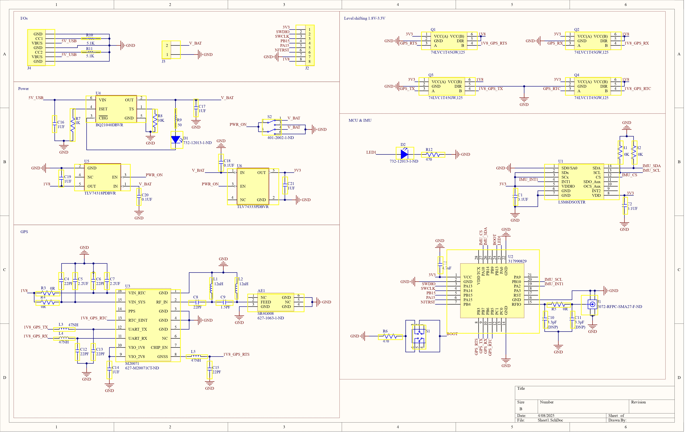

LoRa Pet Tracker
UBC ENPH 479 | 2024-2025 | Roy Nodwell Memorial Prize Winner
Overview
As a team of four engineering physics students, we developed a pet tracking solution featuring a compact LiPo-powered PCB design, a base station, and a corresponding mobile app to provide real-time location monitoring via LoRa (long range) wireless communication. This project combined embedded systems design, wireless point to point communication protocols, and mobile application development to pursue more affordable solutions to everyday pet tracking. Our team earned the Roy Nodwell Memorial Prize as a result of our team's high professional standard and the project's industrial relevance.
Details
LoRa (short for long range) is a radio communication technique in which each symbol of information is encoded by a linearly increasing or decreasing sweep across a set bandwidth, also known as a chirp, with different frequency shifts. This proprietary modulation scheme is unique in that with the use of a matched filter at the receiver end, the scheme can extract symbols from below the noise floor. Our team utilized LoRa's robustness against noise, its free ISM frequency band, and its extended range, due its lower carrier frequency, to develop a more affordable tracking solution. By using an IMU and motion of the pet to adjust update frequencies, we improved the power efficiency of the system thus allowing the collar to last longer under a single charge.
After completing an initial proof of concept system, we aimed to compact and improve the system by designing a custom PCB, which I led, and a set of antennas. For the first iteration of the PCB shown above, low power consumption, ease of testing, and debugging were balanced while also considering the main components must later be further compacted to accommodate medium-sized pets once testing of the custom-made antennas and firmware were complete. For the core, we decided on an STM32WL5 chip with integrated LoRa capabilities to minimize components and space requirements. However, this proved to be one of the greatest challenges of the project as the microcontroller's documentation and support was lacking making it difficult to debug the LoRa setup. Though we did succeed in implementing a point-to-point system between the collar and the node, the system has potential to track multiple pets at once through a star or mesh network with further development.
Another challenge in this project was identifying unreceived messages, due to simultaneous message transmissions at either end or loss of signal. The former issue was addressed by implementing a single acknowledgement protocol, using C, in which each message must be acknowledged by the receiving system before continuing to the next task. If no acknowledgement is received within a certain window, a random backoff time is selected, then the system is returned to receiving mode. The random backoff decreases the probability of both systems transmitting simultaneously a second time in comparison to a predetermined backoff time. For the latter issue, monitoring the system's SNR at each message could allow for adaptive transmission powers and parameters (such as spreading factor) such that the LoRa communication range can increase and decrease according to the environment's noise, thus improving power efficiency even further.